1° Generacion
La primera generación o generación color (First generation en inglés) abarca la primera y segunda temporada del anime y los videojuegos Pokémon Rojo, Azul, Verde y Amarillo para la consola Game Boy, en cada uno de los idiomas en los que se desarrolló. También, a Pokémon Stadium y a Pokémon Snap para la Nintendo 64.
Esta generación transcurre en Kanto.
|


|
Novedades
Los videojuegos que dan inicio a esta generación y a toda la historia Pokémon, Pokémon Rojo y Pokémon Verde, salieron al mercado el 27 de febrero de 1996, dando el primer paso de la gran franquicia que conocemos en la actualidad. Un modo de juego de batalla por turnos que llevaba mucho tiempo en el mercado de los videojuegos.
Aparecen las siguientes novedades:
- 151 Pokémon.
- 8 líderes de gimnasio.
- Primera aparición del profesor Oak.
- El sistema de almacenaje de Pokémon de Bill.
- Intercambio y batallas mediante el cable Link.
- Introducción del rival.
|

|
Pokémon iniciales
En Kanto, las opciones para tu primer Pokémon son Bulbasaur, Charmander y Squirtle, basándose en el triangulo de la ventaja y desventaja del tipo planta, el tipo fuego y el tipo agua.
En la versión Amarilla del juego comienzas con Pikachu (al estilo del anime) y tu rival comienza con Eevee.
| Bulbasaur |
Charmander |
Squirtle |
Pikachu |
 |
 |
 |
 |
| Planta / Veneno |
Fuego |
Agua |
Electrico |
Pokémon legendarios
La Primera generación incluye cinco Pokémon legendarios: Articuno (el ave del hielo), Zapdos (el ave del rayo), Moltres (el ave del fuego), Mew y Mewtwo.
| Articuno |
Zapdos |
Moltres |
Mewtwo |
Mew |
 |
 |
 |
 |
 |
| Hielo / Volador |
Electrico / Volador |
Fuego / Volador |
Psiquico |
Psiquico |
Líderes de gimnasio
Hay 8 líderes de gimnasio, que son aquellos que están especializados en cierto elemento de Pokémon y son los más fuertes de su ciudad:
Lider |
Tipo |
Lugar |
Medalla |
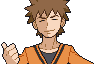Brock |
Roca |
Ciudad Plateada |

MedallaRoca |
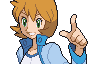Misty |
Agua |
Ciudad Celeste |

Medalla Cascada |

Lt. Surge |
Electrico |
Ciudad Carmín |

Medalla Trueno |
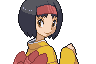Erika |
Planta |
Ciudad Azulona |

Medalla Arcoiris |
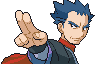Koga |
Veneno |
Ciudad Fucsiaa |

Medalla Alma |
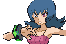Sabrina |
Psiquico |
Ciudad Azafrán |

Medalla Pantano |
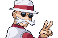Blaine |
Fuego |
Isla Canela |

Medalla Volcán |
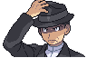Giovanni |
Tierra |
Ciudad Verde |

Medalla Tierra |
Alto Mando
Son los 4 mejores entrenadores de la región más el campeón, que en este caso es tu rival.
1° Miembro |
2° Miembro |
3° Miembro |
4° Miembro |
Campion |
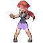Lorelei |
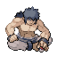Bruno |
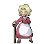Agatha |
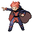Lance |
.png)
Green |
Hielo |
Lucha |
Fantasma |
Dragon |
Varios |
Curiosidaes
- Esta es la generación que incluye más Pokémon fosilizados, con un total de cinco: Kabuto, Kabutops, Omanyte, Omastar y Aerodactyl, frente a la segunda generación que no incluyó ninguno.
- En las versiones betas de Pokémon Rojo y Verde, el tipo volador se llamaba Tipo pájaro. Esto fue corregido porque no todos los Pokémon de tipo volador están basados en pájaros.
- En esta generación existía un único movimiento de tipo dragón y este era furia dragón, que siempre quita 40 PS, por lo que la debilidad de los Pokémon de tipo dragón entre sí no funcionaba.
- Todos los Pokémon legendarios de esta generación (a excepción de Mew) tienen un número en su nombre (ya sea en inglés o español).
- Es la única generación de Pokémon en la cual su portada en los videojuegos no aparece un Pokémon legendario, sino la evolución final de los Pokémon iniciales.
- Algunos objetos preciados y difíciles de conseguir en otras generaciones (como las piedras evolutivas) no lo son en esta, pues la mayoría se pueden comprar en grandes cantidades.
- Por la fórmula que se usa para su cálculo, esta es la generación que con más facilidad se puede asestar un golpe crítico.